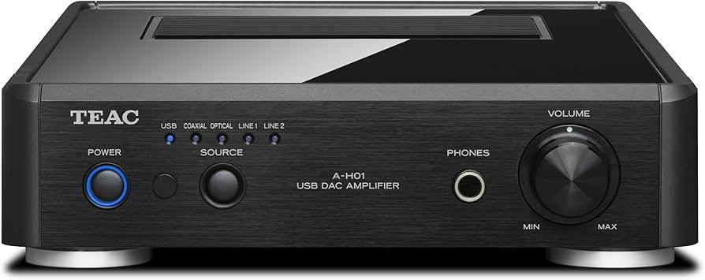

TEAC A-H01

Компактный интегральный усилитель с цифровыми входами и встроенным USB-ЦАП, удобный как центр настольной или небольшой комнатной системы.
Дополнительные фотографии
Технические характеристики
| Формат | Компактный интегральный усилитель |
|---|---|
| Входы | USB, коаксиальный, оптический, 2 × линейный |
| Выходы | Акустические клеммы, сабвуфер, наушники |
| Особенность | Встроенный цифровой ЦАП |
| Корпус | Алюминиевая лицевая панель |
Сильные стороны
- Небольшой корпус
- Цифровые и аналоговые подключения в одном устройстве
- Удобное управление и выход на наушники